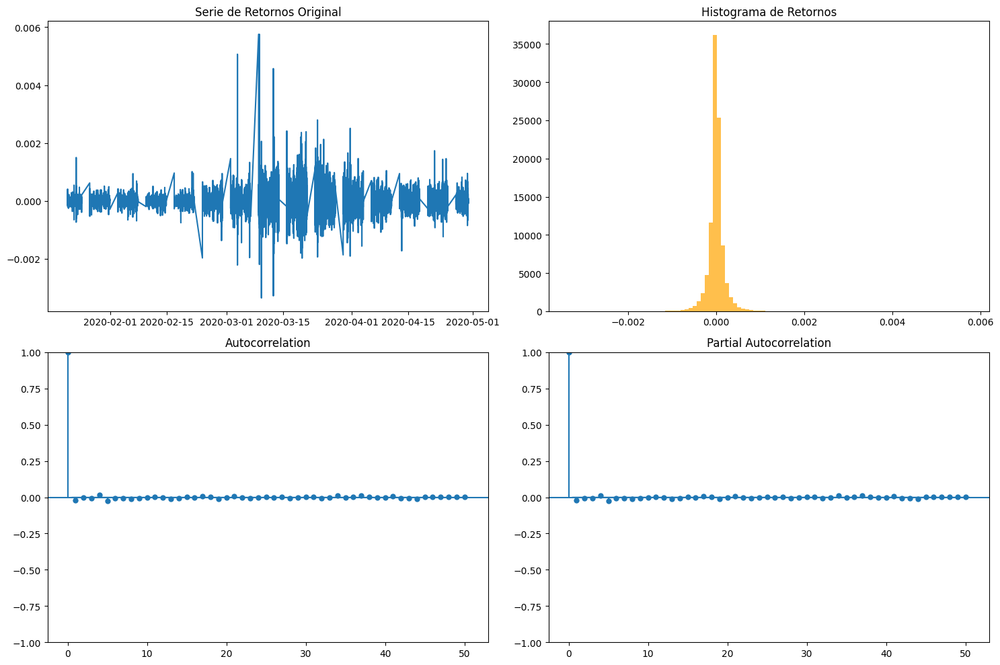
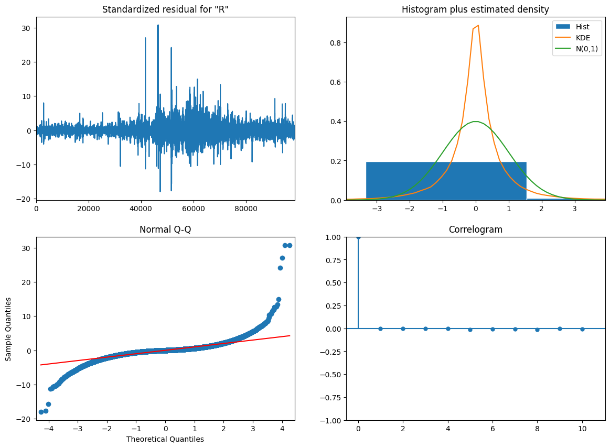
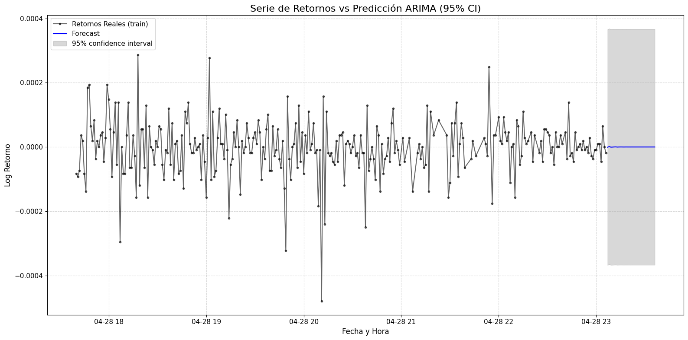

Modelo Arima con partición de datos#
# 1. Verificar qué GPU nos ha asignado Google Colab
!nvidia-smi
"nvidia-smi" no se reconoce como un comando interno o externo,
programa o archivo por lotes ejecutable.
import torch
import time
# 2. Comprobar si PyTorch detecta la GPU y definir 'device'
if torch.cuda.is_available():
device = torch.device("cuda")
print(f"¡GPU activada y lista! Dispositivo: {torch.cuda.get_device_name(0)}")
else:
print("La GPU no está disponible. Asegúrate de haberla activado en 'Entorno de ejecución' > 'Cambiar tipo de entorno de ejecución'.")
device = torch.device("cpu")
print("\nIntentando maximizar la carga de la GPU con un tamaño mayor...")
# Aumentamos el tamaño aún más para intentar maximizar el uso de GPU
# ¡ADVERTENCIA! Esto podría causar un error de 'CUDA out of memory' si tu GPU no tiene suficiente VRAM.
# Si ocurre, reduce el tamaño (por ejemplo, a 70000 o 80000) o quédate con el tamaño anterior.
size = 60000
try:
# Crear tensores aleatorios grandes directamente en la GPU
tensor_a = torch.randn(size, size, device=device)
tensor_b = torch.randn(size, size, device=device)
# Medir el tiempo de la operación
start_time = time.time()
# Multiplicación de matrices
result = torch.matmul(tensor_a, tensor_b)
# Esperar a que terminen las operaciones en la GPU para medir el tiempo exacto
if device.type == 'cuda':
torch.cuda.synchronize()
end_time = time.time()
print(f"Multiplicación de dos matrices de {size}x{size} completada en {end_time - start_time:.4f} segundos.")
print("¡La GPU está trabajando al máximo!")
except RuntimeError as e:
if "out of memory" in str(e):
print(f"Error: CUDA out of memory con matrices de {size}x{size}. Reduce el tamaño o usa el tamaño anterior.")
else:
print(f"Ocurrió un error inesperado: {e}")
---------------------------------------------------------------------------
ModuleNotFoundError Traceback (most recent call last)
Cell In[2], line 1
----> 1 import torch
2 import time
4 # 2. Comprobar si PyTorch detecta la GPU y definir 'device'
ModuleNotFoundError: No module named 'torch'
import kagglehub
import os
# Descargamos la última versión del dataset
path = kagglehub.dataset_download("imetomi/eur-usd-forex-pair-historical-data-2002-2019")
print("Ruta a los archivos del dataset:", path)
Using Colab cache for faster access to the 'eur-usd-forex-pair-historical-data-2002-2019' dataset.
Ruta a los archivos del dataset: /kaggle/input/eur-usd-forex-pair-historical-data-2002-2019
import os
for file in os.listdir(path):
print(file)
import pandas as pd
import numpy as np
import seaborn as sns
from matplotlib import pyplot as plt
df = pd.read_csv(os.path.join(path, "eurusd_minute.csv"))
# Combinar Date y Time para la el horario exacto
df_time = df.copy()
if 'Date' in df_time.columns and 'Time' in df_time.columns:
df_time['Datetime'] = pd.to_datetime(df_time['Date'] + ' ' + df_time['Time'])
df_time = df_time.set_index('Datetime')
df_time = df_time.drop(columns=['Date', 'Time'])
df_time = df_time.sort_index()
# Tomar solo los ultimos 100,000 datos
df_time = df_time.tail(100000)
print(df_time.head())
print(df_time.shape)
eurusd_hour.csv
eurusd_minute.csv
eurusd_news.csv
BO BH BL BC BCh AO \
Datetime
2020-01-21 10:22:00 1.10995 1.11000 1.10987 1.10988 0.00007 1.11007
2020-01-21 10:23:00 1.10989 1.10992 1.10981 1.10986 0.00003 1.11001
2020-01-21 10:24:00 1.10988 1.11016 1.10988 1.11011 -0.00023 1.10999
2020-01-21 10:25:00 1.11012 1.11059 1.11012 1.11056 -0.00044 1.11023
2020-01-21 10:26:00 1.11054 1.11058 1.11048 1.11057 -0.00003 1.11068
AH AL AC ACh
Datetime
2020-01-21 10:22:00 1.11013 1.10999 1.11000 0.00007
2020-01-21 10:23:00 1.11004 1.10993 1.10998 0.00003
2020-01-21 10:24:00 1.11028 1.10999 1.11022 -0.00023
2020-01-21 10:25:00 1.11069 1.11023 1.11069 -0.00046
2020-01-21 10:26:00 1.11070 1.11060 1.11069 -0.00001
(100000, 10)
import numpy as np
# Calculamos los retornos logarítmicos
df_time['Retorno'] = np.log(df_time['BC'] / df_time['BC'].shift(1))
df_time=df_time.dropna()
Retorno=df_time['Retorno']
from statsmodels.tsa.stattools import adfuller
from numpy import log
result = adfuller(Retorno)
print('ADF Statistic: %f' % result[0])
print('p-value: %f' % result[1])
ADF Statistic: -38.692440
p-value: 0.000000
Serie es estacionaria
import numpy as np, pandas as pd
from statsmodels.graphics.tsaplots import plot_acf
import matplotlib.pyplot as plt
import numpy as np
from statsmodels.graphics.tsaplots import plot_acf, plot_pacf
plt.rcParams.update({'figure.figsize': (15, 10)})
fig, axes = plt.subplots(2, 2)
# 1. Serie Original
axes[0, 0].plot(Retorno)
axes[0, 0].set_title('Serie de Retornos Original')
# 2. Histograma de los retornos
axes[0, 1].hist(Retorno, bins=100, color='orange', alpha=0.7)
axes[0, 1].set_title('Histograma de Retornos')
# 3. Función de Autocorrelación (ACF)
plot_acf(Retorno, ax=axes[1, 0], lags=50)
# 4. Función de Autocorrelación Parcial (PACF)
plot_pacf(Retorno, ax=axes[1, 1], lags=50, method='ywm')
plt.tight_layout()
plt.show()

Funciones ACF Y PACF no nos dicen mucho
n_total = len(Retorno)
n_test = 24 * 60 # 1440 minutos (1 día)
train_size = n_total - n_test
print(f"Tamaño total: {n_total}")
print(f"Tamaño de entrenamiento: {train_size}")
print(f"Tamaño de prueba (1 día en minutos): {n_test}")
Tamaño total: 99999
Tamaño de entrenamiento: 98559
Tamaño de prueba (1 día en minutos): 1440
train_data = Retorno[:train_size]
test_data = Retorno[train_size:train_size + n_test]
test_data.head()
| Retorno | |
|---|---|
| Datetime | |
| 2020-04-28 23:07:00 | -0.000009 |
| 2020-04-28 23:08:00 | -0.000037 |
| 2020-04-28 23:09:00 | 0.000055 |
| 2020-04-28 23:10:00 | 0.000037 |
| 2020-04-28 23:13:00 | 0.000000 |
from statsmodels.tsa.arima.model import ARIMA
import numpy as np
import warnings
warnings.filterwarnings('ignore') # Para ignorar advertencias de convergencia
best_aic = np.inf
best_bic = np.inf
best_order = None
best_mdl = None
pq_rng = range(5)
d_rng = range(3)
for i in pq_rng:
for d in d_rng:
for j in pq_rng:
try:
# print(f'Probando ARIMA({i},{d},{j})...')
tmp_mdl = ARIMA(train_data, order=(i,d,j)).fit()
tmp_aic = tmp_mdl.aic
if tmp_aic < best_aic:
best_aic = tmp_aic
best_order = (i, d, j)
best_mdl = tmp_mdl
except Exception as e:
continue
print('aic: {:6.5f} | order: {}'.format(best_aic, best_order))
aic: -1412225.61878 | order: (4, 0, 4)
Si estás trabajando con log retornos de EUR/USD, entonces que el modelo sea ARIMA(4,0,4) es coherente porque los retornos suelen ser estacionarios (por eso d=0), pero en la práctica esto no implica que exista predictibilidad real: en mercados líquidos los retornos se comportan casi como ruido blanco, así que un AIC muy bajo solo indica buen ajuste dentro de muestra y no necesariamente capacidad de predicción; de hecho, un modelo con p=4 y q=4 puede estar capturando ruido (overfitting), por lo que lo importante es validar fuera de muestra y revisar residuos, y en general suele ser más útil modelar la volatilidad (por ejemplo con GARCH) que la media de los retornos.
from statsmodels.graphics.tsaplots import plot_predict
model = ARIMA(train_data, order=best_order)
model_fit = model.fit()
model_fit.plot_diagnostics(figsize=(14,10));

from statsmodels.tsa import stattools
acf_retorno, confint_retorno, qstat_retorno, pvalues_retorno = stattools.acf(model_fit.resid,
nlags=20,
qstat=True,
alpha=0.05)
alpha = 0.05
for l, p_val in enumerate(pvalues_retorno):
if p_val > alpha:
print('Null hypothesis is accepted at lag = {} for p-val = {}'.format(l, p_val))
else:
print('Null hypothesis is rejected at lag = {} for p-val = {}'.format(l, p_val))
Null hypothesis is accepted at lag = 0 for p-val = 0.9048573294146167
Null hypothesis is accepted at lag = 1 for p-val = 0.9873543014236252
Null hypothesis is accepted at lag = 2 for p-val = 0.9986303357414807
Null hypothesis is accepted at lag = 3 for p-val = 0.999880807850423
Null hypothesis is rejected at lag = 4 for p-val = 0.0006814291944375967
Null hypothesis is rejected at lag = 5 for p-val = 5.338167581403423e-05
Null hypothesis is rejected at lag = 6 for p-val = 9.661661261745515e-06
Null hypothesis is rejected at lag = 7 for p-val = 6.36374921682558e-08
Null hypothesis is rejected at lag = 8 for p-val = 1.4844209667496207e-07
Null hypothesis is rejected at lag = 9 for p-val = 1.5920458206171976e-07
Null hypothesis is rejected at lag = 10 for p-val = 3.157512242810211e-07
Null hypothesis is rejected at lag = 11 for p-val = 4.4621252462912707e-07
Null hypothesis is rejected at lag = 12 for p-val = 2.6046516956659618e-09
Null hypothesis is rejected at lag = 13 for p-val = 8.827434274606509e-10
Null hypothesis is rejected at lag = 14 for p-val = 1.5385294074166816e-09
Null hypothesis is rejected at lag = 15 for p-val = 3.4252456118991137e-09
Null hypothesis is rejected at lag = 16 for p-val = 2.6256058792769447e-09
Null hypothesis is rejected at lag = 17 for p-val = 4.2179535174795714e-09
Null hypothesis is rejected at lag = 18 for p-val = 2.123685766798395e-10
Null hypothesis is rejected at lag = 19 for p-val = 3.38675823636033e-10
import matplotlib.pyplot as plt
import pandas as pd
plt.rcParams.update({
'figure.figsize': (16, 8),
'axes.titlesize': 16,
'axes.labelsize': 12,
'lines.linewidth': 1.5,
'font.size': 11
})
fig, ax = plt.subplots()
subset_size = 300
forecast_steps = 30
# Últimos datos reales
train_subset = train_data.iloc[-subset_size:]
# Predicción
forecast = model_fit.get_forecast(steps=forecast_steps)
forecast_mean = forecast.predicted_mean
conf_int = forecast.conf_int()
# Crear índice temporal correcto para forecast
last_date = train_data.index[-1]
freq = pd.infer_freq(train_data.index) or 'T' # fallback a minutos
forecast_index = pd.date_range(start=last_date, periods=forecast_steps+1, freq=freq)[1:]
# Plot datos reales
ax.plot(train_subset.index, train_subset,
label='Retornos Reales (train)', color='black', marker='.', alpha=0.6)
# Plot forecast
ax.plot(forecast_index, forecast_mean, label='Forecast', color='blue')
# Intervalo de confianza
ax.fill_between(forecast_index,
conf_int.iloc[:, 0],
conf_int.iloc[:, 1],
color='gray', alpha=0.3, label='95% confidence interval')
ax.set_title('Serie de Retornos vs Predicción ARIMA (95% CI)')
ax.set_xlabel('Fecha y Hora')
ax.set_ylabel('Log Retorno')
ax.legend(loc='upper left')
ax.grid(True, linestyle='--', alpha=0.5)
plt.tight_layout()
plt.show()

from sklearn.metrics import mean_absolute_error, mean_squared_error, mean_absolute_percentage_error
import numpy as np
from statsmodels.tsa.arima.model import ARIMA # Import ARIMA to ensure it's available
# Re-fit the model to ensure model_fit is defined in this execution context
# This assumes `train_data` and `best_order` are available from previous cells.
model = ARIMA(train_data, order=best_order)
model_fit = model.fit()
# Generar predicciones para el tamaño de test_data usando el modelo ARIMA ya entrenado
forecast_arima = model_fit.get_forecast(steps=len(test_data))
y_pred_arima = forecast_arima.predicted_mean
# 1. Métricas de Error para ARIMA
mae_arima = mean_absolute_error(test_data, y_pred_arima)
mse_arima = mean_squared_error(test_data, y_pred_arima)
rmse_arima = np.sqrt(mse_arima)
mape_arima = mean_absolute_percentage_error(test_data, y_pred_arima) # Añadido MAPE
# 2. Directional Accuracy (Precisión Direccional)
sign_real = np.sign(test_data.values)
sign_pred_arima = np.sign(y_pred_arima.values)
da_arima = np.mean(sign_real == sign_pred_arima) * 100
# Imprimimos los resultados
print("--- MÉTRICAS DE EVALUACIÓN (ARIMA) ---")
print(f"MAE (Mean Absolute Error): {mae_arima:.6f}")
print(f"MSE (Mean Squared Error): {mse_arima:.8f}")
print(f"RMSE (Root Mean Squared): {rmse_arima:.6f}")
print(f"MAPE (Mean Abs Perc Error): {mape_arima:.2f} (Nota: Puede ser enorme por división entre ~0)")
print(f"Directional Accuracy (DA): {da_arima:.2f}%")
--- MÉTRICAS DE EVALUACIÓN (ARIMA) ---
MAE (Mean Absolute Error): 0.000092
MSE (Mean Squared Error): 0.00000002
RMSE (Root Mean Squared): 0.000135
MAPE (Mean Abs Perc Error): 53609022.28 (Nota: Puede ser enorme por división entre ~0)
Directional Accuracy (DA): 45.83%
from statsmodels.stats.diagnostic import acorr_ljungbox
# Realizamos el test de Ljung-Box en los residuos del modelo ARIMA
print("--- TEST DE LJUNG-BOX (Residuos) ---")
ljung_box_results = acorr_ljungbox(model_fit.resid, lags=[5, 10, 20], return_df=True)
display(ljung_box_results)
# Nota: Si el p-value es menor a 0.05, rechazamos la hipótesis nula de que los residuos son ruido blanco,
# lo que indicaría que el modelo no ha capturado toda la estructura de los datos.
--- TEST DE LJUNG-BOX (Residuos) ---
| lb_stat | lb_pvalue | |
|---|---|---|
| 5 | 21.396987 | 6.814292e-04 |
| 10 | 51.217758 | 1.592046e-07 |
| 20 | 86.207230 | 3.386758e-10 |